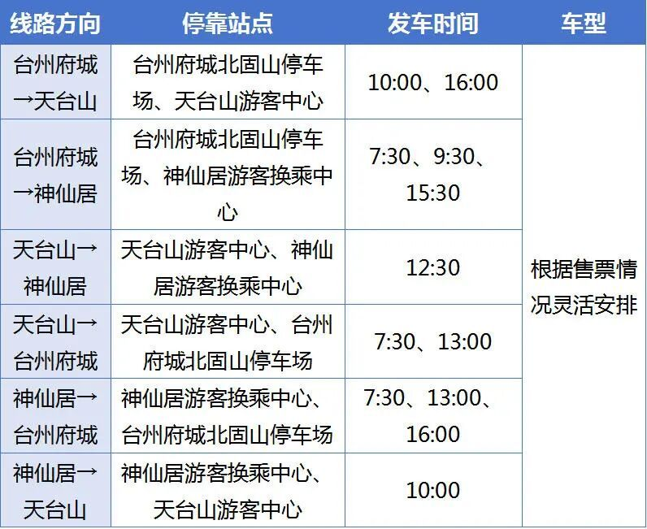

今晚 1
抢 10 月 6 日神仙居
进入“神仙居旅游”小程序，选 10 月 6 日、实名信息、预约时段。优先买门票 + 索道 + 南天顶；如果联票售罄，先确保单门票和索道，南天顶到场再看。

10 月 4 日杭州东出发，10 月 5 日从天台山转仙居，10 月 6 日主攻神仙居，10 月 7 日从仙居回杭州西。朋友在杭州西下车，你换乘去南京南。最关键的不是先订酒店，而是先锁 10 月 6 日神仙居 和 10 月 5 日 12:30 直通车。
这趟行程能不能顺利，主要取决于直通车、神仙居预约和返程换乘，不是取决于你几点起床。
12306 查不到天台山站到仙居站的直达动车。国庆期间开通的“天仙来临”景区直通车，从天台山游客中心直达神仙居游客集散中心，10 月 5 日这一班是 12:30 发车，不安排途中停靠。
购票方式不是现场现金，而是用微信扫官方公告里的二维码，进入 滴滴出行小程序，选择对应线路并支付 0.01 元预订款，取得购票订单后按订单到上客点乘车。国庆运行日期为 10 月 1 日至 10 月 7 日。
这段没有直达动车。10 月 5 日如果先坐高铁到仙居站，再折返神仙居，时间和体力都会明显增加；优先按直通车走。
地图把高铁段、接驳直通车和景区内部路线分开表示。点击日期只看当天；点击“全程”看整体跨度。
下面把“必买、建议买、可选买”分开。所有官方入口都直接给出名称或链接，优先在官方渠道买，避免黄牛票和无法核验的预约。
| 要买什么 | 使用日期 | 去哪买 | 价格 / 规则 | 紧急度 |
|---|---|---|---|---|
| 杭州东 → 天台山 高铁票 | 10 月 4 日早班 | 铁路 12306 官网或 12306 App | 参考早班：G7711 06:30 到 07:30；G7363 07:33 到 08:42；G3021 08:53 到 10:00。以 12306 当日实际余票为准。 | 尽快买 |
| 天台山站 → 天台山游客中心 接驳直通车 | 10 月 4 日到达后 | 微信扫“台州发布 / 仙居发布”官方公告里的二维码，进入滴滴出行小程序；认准“高铁天台山站 → 天台山游客中心” | 官方模式为支付 0.01 元预订款并取得订单；不安排途中停靠。班次以小程序和现场为准。 | 和火车一起订 |
| 天台山大瀑布门票 | 10 月 4 日下午 | 微信搜索并关注 天台山旅游网，或进入天台山大瀑布官网门票预订页 | 官网显示门票约 100 元起，开放时间约 08:00 到 16:00。雨天水量大，是这个行程里最合适的瀑布型景点。 | 建议提前买 |
| 石梁飞瀑门票 + 景交车 | 10 月 4 日备选 | 微信搜索 天台山旅游网，或到天台山游客中心现场购买景交巴士票 | 门票约 60 元；从天台山游客中心换乘景交巴士往返约 40 元。车程远、山路多，只有上午到得早才建议硬塞。 | 可选 |
| 国清寺预约 / 免费入园 | 10 月 5 日上午 | 微信搜索 天台山旅游网，按官方提示预约或核验 | 国清寺通常免费或低价；国庆可能限流，出发前查看公众号当天公告。 | 建议预约 |
| 天台山游客中心 → 神仙居游客集散中心 直通车 | 10 月 5 日 12:30 | 微信扫官方公告二维码，进入 滴滴出行小程序；选择“天台山 → 神仙居” | 发车点：天台山游客中心；到达点：神仙居游客集散中心。运行日期 10 月 1 日至 7 日，支付 0.01 元预订款取得订单。 | 最优先 |
| 神仙居门票 + 索道 + 南天顶 | 10 月 6 日 | 微信搜索并进入官方平台 神仙居旅游 小程序，或神仙居景区官网 | 国庆 10 月 1 日至 7 日南、北门及索道 06:00 开始运营；实名制分时段预约，建议至少提前 1 天。参考价格：门票约 110 元，索道上行 65 元、下行 55 元，南天顶约 99 元；以官方小程序当日可售产品为准。 | 先抢这个 |
| 神仙居南门接驳 / 观光车 | 10 月 6 日 | 神仙居官方小程序或南门现场扫码 | 如果小程序提供含接驳车、观光车的联票，优先买联票；如果没有，按现场指引购买。不要把南、北门混用。 | 和门票一起确认 |
| 仙居 → 杭州西 高铁票 | 10 月 7 日上午 | 铁路 12306 | 推荐 G3132 09:24 到 10:36 杭州西；备选 G834 11:01 到 12:20 杭州西。朋友在杭州西下车。 | 尽快买 |
| 杭州西 → 南京南 高铁票 | 10 月 7 日中午 | 铁路 12306 | 推荐 G812 11:34 到 12:57 南京南；备选 G886 13:27 到 15:16。换乘至少留 50 分钟，杭州西站内跟着换乘标识走。 | 尽快买 |
| 住宿：天台县城 / 天台山游客中心附近 | 10 月 4 日 | 携程、美团、飞猪或高德地图内酒店官方入口 | 优先选能取消、离天台山游客中心近的；10 月 4 日雨天不要把住宿订到石梁景区深处。 | 尽快订 |
| 住宿：白塔镇 / 神仙居南门附近 | 10 月 5 日 | 携程、美团、飞猪或高德地图内酒店官方入口 | 为了 10 月 6 日 06:00 到南门，10 月 5 日晚上住南门或白塔镇，不推荐住仙居县城再早上赶路。 | 尽快订 |
| 住宿：仙居站附近 | 10 月 6 日 | 携程、美团、飞猪或高德地图内酒店官方入口 | 10 月 7 日早班高铁，住仙居站附近能明显减少不确定性。 | 尽快订 |
火车票只用 12306；景区票只用景区官方微信公众号、官方小程序或官网；直通车只用官方公告二维码进入的滴滴小程序。第三方平台可以作为查询参考，但不要为了便宜几块钱去买无法核验的票。
今天是 2026 年 10 月 3 日，10 月 4 日就出发。按下面顺序操作，先把不可替代的票锁定。
进入“神仙居旅游”小程序，选 10 月 6 日、实名信息、预约时段。优先买门票 + 索道 + 南天顶；如果联票售罄，先确保单门票和索道，南天顶到场再看。
扫官方公告二维码进入滴滴出行小程序，选择天台山游客中心到神仙居游客集散中心。没有订单就不要只靠现场碰运气。
首选 G7711 或 G7363，其次 G3021、G7503。到得越早，下午看天台山大瀑布越从容。
先买仙居到杭州西，再买杭州西到南京南。推荐 G3132 + G812；如果第一段只剩晚班，就整套换成 G834 + G886。
优先天台山大瀑布 100 元票。只有你 10 月 4 日 11:00 前能到天台山游客中心，才考虑再买石梁飞瀑。
天台山游客中心附近、白塔镇或神仙居南门、仙居站附近。尽量选可取消房型，给神仙居没票时的缙云备选留退路。
神仙居是否正常开放、直通车是否按 12:30 发车、10 月 6 日索道是否正常运行。任何一项异常，立刻切到缙云仙都方案。
这是一个“少走路、少折返、把晴天留给神仙居”的版本。所有时间都留了缓冲，国庆当天按现场排队情况微调。
核心任务：顺利到达，下午只安排一个瀑布景区。
核心任务：不要错过从天台山游客中心发出的直通车。
核心任务：抢第一批入园，把最省腿的路线走完。
核心任务：朋友在杭州西下车，你站内换乘去南京南。
重点看“天台山 → 神仙居”这一行：12:30 从天台山游客中心发车，停靠神仙居游客换乘中心。车型和班次会根据售票情况灵活安排，出发前再看一次官方公告。

核心原则是：不要在 10 月 5 日先到仙居，再临时折返缙云。要换就整段换。
如果 10 月 6 日神仙居没票，10 月 5 日就不要去仙居，直接从天台山转缙云，住缙云西站附近。10 月 6 日玩仙都，10 月 7 日从缙云西回杭州东或杭州西，再转南京南。
仙都官方购票：微信搜索 缙云仙都景区，或进入仙都景区官网。优先买含景交车的票，索道另购，以官方小程序当日价格为准。
10 月 5 日上午国清寺，下午改去琼台仙谷或石梁飞瀑，10 月 5 日继续住天台山。10 月 6 日看天气再决定去仙居还是转缙云。缺点是返程当天会更赶。
如果已经订了仙居住宿、但神仙居没票，可以改去桐江书院、烟霞湖、永安溪等周边点。它不如神仙居震撼，但至少不用把整段交通推翻。
如果 10 月 6 日天气差、索道停运或你不想排队，就把 10 月 6 日当机动日，10 月 7 日按原票从仙居回杭州西。朋友仍然在杭州西下车，你转南京南。
天台山到缙云没有一条已经核实好的直达景区直通车，优先在 12306 查联程，或让当地正规网约车 / 包车报价。仙居到缙云也不顺，所以一旦决定换缙云，应该在 10 月 5 日直接改路线，不要先到仙居再折返。
下面这些链接和搜索词，出发前再点开确认一次。票务和限流规则会临时变化。